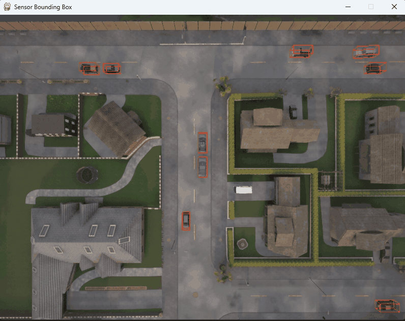

交互式脚本
生成交通流量
python examples/generate_traffic.py --host localhost --port 2000 -n 50 -w 20 --safe
手动控制车辆
python examples/manual_control.py --host localhost --port 2000 --rolename hero --keep_ego_vehicle
手动控制行人：
python examples/manual_control.py --filter walker.pedestrian.*
绘制边界框
脚本将根据用户指定的视角 view（上方above、后面behind）附加一个 RGB 相机，并在距离distance之内绘制所有的参与者。
python examples/sensor_bounding_box.py --host localhost --port 2000 --rolename hero --view above --distance 100 --res 800x600 --fov 90

注意
运行之前，需要先运行 manual_control.py 生成一辆英雄车辆，否则运动报错：Actor hero not found。 并且将原始脚本的环境路径../src改为..。
可视化六种相机
该脚本为您提供了如何在 Carla 中可视化各种 RGB 相机传感器的示例。
python examples/rgb_camera_example.py --host localhost --port 2000 --rolename hero

路径点跟踪
该脚本实现了一个简单的路径点跟踪方法。它将沿着地图上的路径点行驶，并在到达路径点终点时停止。
python examples/waypoint_follow.py --host localhost --port 2000 --rolename hero --map Town01 --json_file data/town01_waypoints.json --sync --fixed_delta_seconds=0.05 --spawn --visualize --camera_follow
注意
运行之前需要先试用python config.py -m Town01将地图切换到 Town01 。

可视化激光点云
此脚本提供了如何使用 Open3D 可视化激光雷达点云和雷达数据的示例。
python examples/3d_lidar.py --host localhost --port 2000 --rolename hero --keep_ego_vehicle